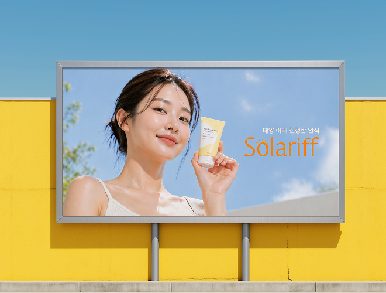
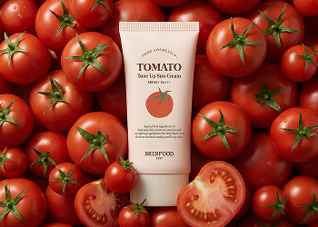
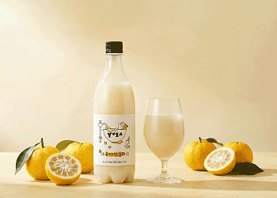
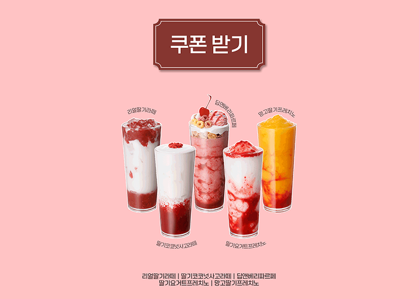
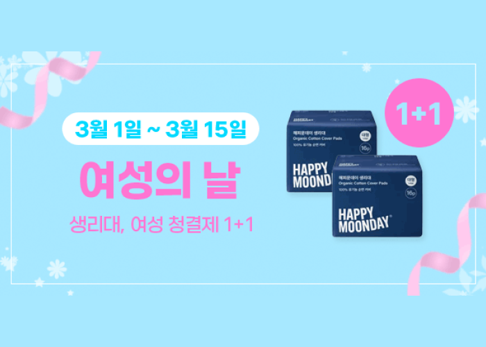
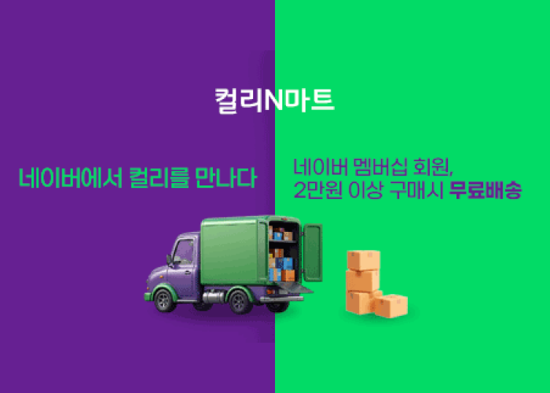
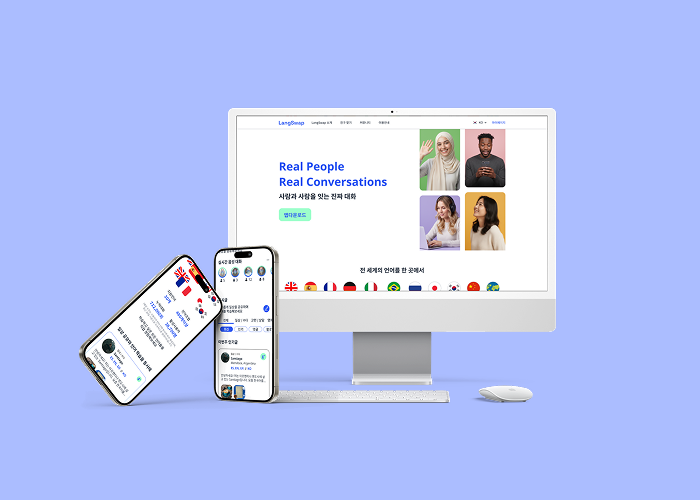
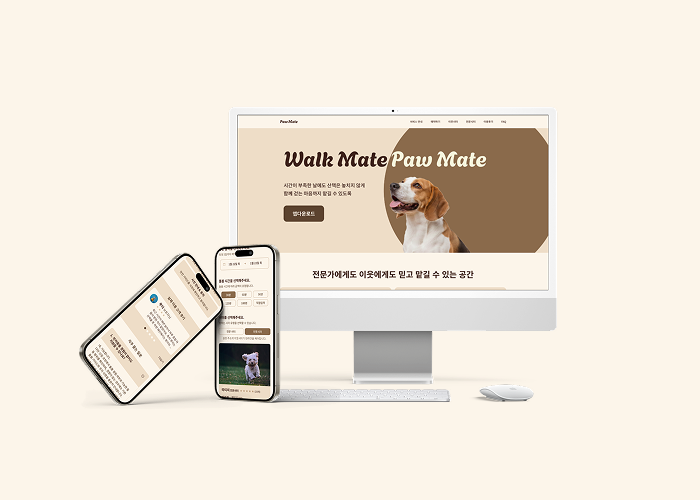

FORWARD BY DESIGN
목적을 향해 나아가는 디자인
- PURPOSE
- IDEA
- STRUCTURE
- DETAIL
- SOLUTION
목적을 잊지 않는 디자이너 조유진입니다.
저에게 디자인은 모호함을 명확함으로 바꾸어 나가는 여정입니다.
그리고 그 과정에서 디자인의 목적을 잊지 않을 때 좋은 디자인이 완성된다고 믿습니다.
목적 있는 아이디어 확장을 시작으로,
확장된 아이디어의 정교한 설계를 통해 흐름을 구성하여
브랜드와 사용자에게 최적화된 솔루션을 제공하는 디자인을 구현하고자 합니다.
시각적 아름다움을 넘어,
브랜드의 목표와 사용자 경험이 일치하는 길을 만드는 디자이너가 되겠습니다.
모든 작업물은 개인작업 100%로 제작되었습니다.
AI Branding

브랜딩 01.
선케어 전문 코스메틱
Solariff
Promotion

상세페이지 01.
스킨푸드
토마토선크림

상세페이지 02.
어떤하루 By 녹동양조
고흥 유자 막걸리

상세페이지 03.
세임디
마레 오벌 플레이트

이벤트페이지 01.
텐퍼센트
프리퀀시 이벤트

배너 이미지 01.
해피문데이
홈 배너

배너 이미지 02.
모바일 배너
네이버 홈
UI | Logo Design

반응형 웹페이지 01.
글로벌 언어교환 서비스
LangSwap

반응형 웹페이지 02.
반려동물 돌봄 중개 서비스
PawMate

앱 디자인 01.
감정 기록 앱
감보기

로고 디자인 01.
감정 기록 앱
감보기